第 1 章 : 序論
1.3 コンピュータに仕事をさせるための手順
例題 1-1 : プログラムの作成・コンパイル・実行
C 言語でプログラムを作成してコンパイルを行って実行コードを生成し、実行するまでの手順を体験してみましょう。
初めにソースコードを作成します。エディタ(Emacs, Vim, VSCode など)で、次のプログラムを作成を作成し、ファイル名を first.c として保存します。
なお、 C 言語のソースコードのファイル(ソースファイル)の拡張子は .c とする必要があります。
first.c
#include <stdio.h>
int main(void) {
printf("This is my first C program!\n");
return 0;
}
次に端末を開き、 gcc コマンドでソースファイルを指定してコンパイルを行います。コンパイルを行ってできる実行コードのファイル名は gcc コマンドの -o オプションで指定しましょう。
次のようにソースファイル first.c をコンパイルすると、プログラムに構文エラー(Syntax error)がなければ、実行コード first が作成されます。
terminal
$ gcc first.c -o first
$ ls
first first.c
実行コード first を実行します。
プログラムに誤りがなければ、標準出力に This is my first C program! と表示され、改行されます。
terminal
$ ./first
This is my first C program!
$
tips ソースコードに構文エラー(文法上の誤り)があると、コンパイラはコンパイルに失敗し、次のようなエラーメッセージやヒントを表示します。 エラーメッセージをよく確認し、ソースコードを修正したうえで再度コンパイルを行いましょう。
terminal
$ gcc first.c -o first
first.c: In function ‘main’:
first.c:4:42: error: expected ‘;’ before ‘return’
4 | printf("This is my first C program!\n")
| ^
| ;
5 |
6 | return 0;
| ~~~~~~
例題 1-2 : コンパイルとリンク
gcc にはコンパイラとリンカの両方の機能が備わっています。
プログラミング基礎で扱うような小規模なプログラムの開発では、
例題 1-1 で行ったように gcc でソースコードから直接実行コードを作成しても問題ありませんが、複数のソースコードを必要とする大規模な開発では、コンパイルとリンクを分けて行うことが多いです。
参考のために、コンパイルとリンクを分けて実行コードを作成する方法を体験しておきましょう。
まず、次のソースコードを作成し、second.c とファイル名を付けて保存しましょう。
second.c
#include <stdio.h>
int main(void) {
printf("Second program!\n");
return 0;
}
次にソースコードをコンパイルしオブジェクトコードを作成します。
gcc の -c オプションを用います。
次のようにコンパイルを行うと、オブジェクトコードのファイル second.o が作成されます。
terminal
$ gcc -c second.c
$ ls
second.c second.o
最後に、リンカを用いて、オブジェクトコードから実行コードを作成します。
リンカは複数のオブジェクトコードやライブラリを結合して、コンピュータ上で直接実行できる実行コードを作成するものです。
リンクは gcc の -o オプションで、実行コードのファイル名と、リンク対象のオブジェクトコードを指定して行います。
terminal
$ gcc -o second second.o
$ ls
second second.c second.o
実行コード second を実行すると、標準出力に Second program! と表示され改行されます。
terminal
$ ./second
Second program!
$
tips 実行コードやオブジェクトコードはコンピュータが解釈できる 0, 1 の2進数でされる機械語で書かれたプログラム(およびデータ)となっています。 (通常の)人間が読んでわかるものではありませんが、
xxdコマンドやodコマンドを使って、次のように実行コードの中身を見ることはできます。
terminal
$ xxd -b second | less
00000000: 01111111 01000101 01001100 01000110 00000010 00000001 .ELF..
00000006: 00000001 00000000 00000000 00000000 00000000 00000000 ......
0000000c: 00000000 00000000 00000000 00000000 00000011 00000000 ......
00000012: 00111110 00000000 00000001 00000000 00000000 00000000 >.....
00000018: 01100000 00010000 00000000 00000000 00000000 00000000 `.....
0000001e: 00000000 00000000 01000000 00000000 00000000 00000000 ..@...
00000024: 00000000 00000000 00000000 00000000 10011000 00110110 .....6
(以下略 q で表示終了)
演習
演習 1-1
以下のソースコードをコンパイルし、実行してプログラムの動作を確認してください。
count10.c
// IS2 99 愛子花子
#include <stdio.h>
int main(void) {
int count;
for (count = 1; count <= 10; count++) {
printf("%d ", count);
}
printf("end!\n");
return 0;
}
プログラムの実行結果については、次のように script コマンドを用いて、
ターミナルへの入出力をファイル count10.log に保存してください。
terminal
$ script count10.log
$ ./count10
1 2 3 4 5 6 7 8 9 10 end!
$ exit
第 2 章 : C 言語の基礎
2.4 C 言語によるプログラミング
例題 2-1 : Hello, World!
次のプログラムは、標準出力 (ターミナル) へ Hello, World! と表示するプログラムです。
ソースコード中の // は単一行コメントの開始を表す記号で、// から右側行末まではコメントとして扱われます。コンパイラはコメント部分は無視してコンパイルを行います。
プログラムを作成し、コンパイルを行って実行してみましょう。
hello.c
#include <stdio.h> // (1)
int main(void) { // (2-1)
printf("Hello, World!\n"); //(3)
return 0; // (4)
} // (2-2)
hello.c の各部分について説明します。
#include <stdio.h> // (1)
#include はプリプロセッサディレクティブと呼ばれるもののひとつで、指定したファイルをソースコードに組み込むときに使用します。
ここでは、 stdio.h というファイル(ヘッダファイル)が指定されています。
stdio.h はシステムで提供されている標準入出力を処理する関数を宣言しています。
int main(void) { // (2-1)
...(中略)
} // (2-2)
C 言語で作成したプログラムは、実行すると(通常)はじめに main 関数が呼び出されます。
ここではその main 関数を定義しています。
関数の定義ではまず、関数名と関数に渡す値(引数)の型、関数が返す値(返り値)の型を指定します。
このプログラムでは、関数名として main 、引数の型として void 型(空であること示す型)、返り値の型として int 型(整数型)が指定されています。
なお、main 関数の返り値の方は int 型となります。
(main 関数に引数を渡すこともできますが、詳細は 10 章で説明します。)
関数の本体で行う処理を { と } で囲まれた部分に記述します。
printf("Hello, World!\n"); //(3)
printf は引数で指定した文字列を標準出力へ出力する命令です。
引数で渡された " (ダブルクォート)で囲まれた文字列を出力します。
なお、文字列中の \n は改行文字を表し、出力時はこの部分で改行が行われます。
return 0; // (4)
return 文は関数(ここでは main 関数)の実行を終了し、関数の呼び出し元に返す値を設定する命令です。
main 関数は正常に終了すると整数値 0 を返します。
このプログラムをコンパイルし、実行すると次のように Hello, World! と表示し改行されます。
terminal
$ gcc hello.c -o hello
$ ./hello
Hello, world!
$
tips
manコマンドを使うとシステムで提供されている C 言語の関数や、ファイルなどに関する情報が得られます。stdioやprintfなどについてmanコマンドを使って調べてみましょう。
terminal
$ man stdio
STDIO(3) Linux Programmer's Manual STDIO(3)
NAME
stdio - standard input/output library functions
SYNOPSIS
#include <stdio.h>
FILE *stdin;
FILE *stdout;
FILE *stderr;
DESCRIPTION
The standard I/O library provides a simple and effi‐
cient buffered stream I/O interface. (以下略)
演習
演習 2-1
次のプログラムの <your name> の部分を自分の名前に変更したプログラムを作成し、コンパイルし実行して、その動作を確認しましょう。
name.c
// IS 99 愛子花子
#include <stdio.h>
int main(void) {
printf("Hi, ");
printf("<your name>");
printf("!\nHow are you?\n");
return 0;
}
演習 2-2
次のプログラムを作成し、実行してみましょう。
fizzbuzz.c
#include <stdio.h>
#define MAX_COUNT 42
int main(void) {
int count = 1;
while (count <= MAX_COUNT) {
if (count % 15 == 0) {
printf("FizzBuzz\n");
} else if (count % 3 == 0) {
printf("Fizz\n");
} else if (count % 5 == 0) {
printf("Buzz\n");
} else {
printf("%d\n", count);
}
count = count + 1;
}
return 0;
}
第 3 章 : 変数とデータ型
例題 3-1 : 変数の宣言と値の代入
次のプログラムは変数を用いたデモプログラムです。
variables1.c
#include <stdio.h>
int main(void) {
// (1) 変数の宣言
char character;
int i, num;
double temperature;
// (2) 変数への値の代入
character = 'z';
i = 42;
num = i + 10;
temperature = -3.4;
// (3) 変数の値の表示
printf("%c\n", character);
printf("%d\n", i);
printf("%d\n", num);
printf("%f\n", temperature);
return 0;
}
プログラムの説明をしていきます。
変数を用いる際には、まず変数の型(データ型)と変数名を示して宣言する必要があります。
// (1) 変数の宣言
char character;
int i, num;
double temperature;
これにより、 char 型の変数 character と、int 型の変数 i および num、
double 型の変数 temperature が使えるようになりました。
なお、変数を宣言しただけではその変数の値は不定となります。
変数へ値を代入するときは代入演算子 = を使います。
// (2) 変数への値の代入
character = 'z';
i = 42;
num = i + 10;
temperature = -3.4;
代入演算子 = の左辺には、代入先となる変数を置き、
右辺には代入する値を持ってきます。
character = 'z'; が実行されると、char 型の変数 character に 1 文字の値 'z' が代入されます。
同様に i = 42; が実行されると、int 型の変数 i に整数 42 が代入されます。
代入演算子の右辺に式を持ってくることもできます。
num = i + 10; が実行されると右辺が計算され、その計算結果である 52 が int 型の変数 num に代入されます。
(今、 i の値が 42 であったことに注意)
変数の値を表示するには printf を用いるとよいです。
printf 関数の詳しい使い方については 4 章で説明します。
// (3) 変数の値の表示
printf("%c\n", character);
printf("%d\n", i);
printf("%d\n", num);
printf("%f\n", temperature);
プログラムの実行結果を示します。
terminal
z
42
52
-3.400000
例題 3-2 : 変数の宣言時の初期化
変数の宣言時と同時に変数の値を代入することもできます。 これを変数の初期化といいます。 変数の初期値が決まっている変数に対しては、変数の初期化を行うとよいでしょう。
変数の初期化を用いたプログラムを示します。
variables2.c
#include <stdio.h>
int main(void) {
// 変数の宣言時に値を設定
char character = 'P';
int num = -57;
double temperature = 12.34;
printf("%c\n", character);
printf("%d\n", num);
printf("%f\n", temperature);
return 0;
}
プログラムの実行結果を示します。
terminal
P
-57
12.340000
例題 3-3 : 代入による変数の上書き
変数への代入は 1 度だけでなく複数回行うことができます。
次のプログラムでは、int 型の変数 i と j に対して、
変数宣言時に初期化を行った後、
それぞれの変数に対して 2 回代入を行っています。
初期化、1 回目の代入、2 回目の代入それぞれが行われた直後で
変数 i と j の値がどのように変化しているか、
プログラムを実行して確かめてください。
variables3.c
#include <stdio.h>
int main(void) {
// (1) 初期化
int i = 10;
int j = 20;
printf("(1)\n");
printf("i = %d\n", i);
printf("j = %d\n", j);
// (2) 代入
i = 30;
j = i;
printf("(2)\n");
printf("i = %d\n", i);
printf("j = %d\n", j);
// (3) さらなる代入
i = i + 2;
j = 3 * j;
printf("(3)\n")
printf("i = %d\n", i);
printf("j = %d\n", j);
return 0;
}
プログラムの実行結果を示します。
変数 i と j の値がどのように変化しているか、
プログラムと対応させて確認してください。
terminal
(1)
i = 10
j = 20
(2)
i = 30
j = 30
(3)
i = 32
j = 90
さて、2 回目の代入では代入演算子 = の左辺と右辺に同じ変数が現れています。
// (3) さらなる代入
i = i + 2;
j = 3 * j;
このような場合は、代入が行われる前の変数の値を使って右辺の式が評価され、
その値が、左辺の変数に代入されることになります。
例えば、i = i + 2; が行われる前では、i には値 30 が格納されていますが、
i = i + 2; が実行されると i の値は 32 となります。
なお、このプログラムの処理の流れをフローチャートで示すと、 以下のようになります。
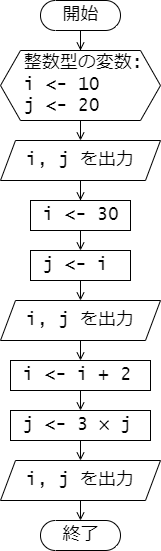
例題 3-4 : キャストによる型の変換
int 型や double 型などの数値を表す型の値や変数は、
キャストと呼ばれる機能を使って一時的に型を変換することができます。
次のプログラムは、キャストによって、int 型の値を double 型に変換したり、
その逆を行っています。
cast.c
#include <stdio.h>
int main(void) {
int i = 256;
double x = -12.34;
double d_i;
int i_x;
// (1) int 型の値を double 型に変換
d_i = (double)i;
printf("i = %d\n", i);
printf("d_i = %f\n", d_i);
// (2) double 型の値を int 型に変換
i_x = (int)x;
printf("x = %f\n", x);
printf("i_x = %d\n", i_x);
return 0;
}
実行例を示します。
terminal
i = 256
d_i = 256.000000
x = -12.340000
i_x = -12
double 型の値をキャストによって int 型に変換したときは、
小数点以下が切り捨てとなります。
演習
演習 3-1
プログラム semicircle.c は半径 radius の半円の面積を求めて
表示するプログラムです。
このプログラムは次のフローチャートをもとに作成しました。
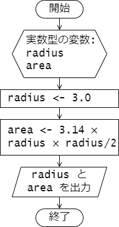
プログラム中、変数 radius の値を変更して、プログラムを実行し、動作結果を確認してください。
semicircle.c
#include <stdio.h>
int main(void) {
double radius, area;
radius = 3.0; // この値を変更する。
area = 3.14 * radius * radius / 2;
printf("The area of semicircle of ");
printf("radius %f is %f.\n", radius, area);
return 0;
}
演習 3-2
プログラム numerical_sequence.c は、
初項 \( a_1 = 1 \)、漸化式 \( a_{n+1} = 2 a_n + 1 \) で定まる数列 \( a_n \) を
初項から第 10 項まで計算して表示するプログラムです。
プログラムを実行して、動作結果を確認してください。
numerical_sequence.c
#include <stdio.h>
#define N_MAX 10
int main(void) {
int n = 1;
int a = 1;
do {
printf("n = %d : %d\n", n, a);
a = 2 * a + 1;
n++;
} while (n <= N_MAX);
return 0;
}
参考として、処理の流れを表したフローチャートを以下に示します。
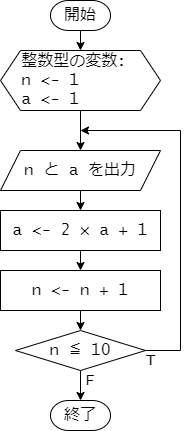
第 4 章 : 標準入出力
4.1 : 標準出力
例題 4-1 : printf の使い方
コンソールなどの標準出力へ文字列を出力するときは printf 関数を使います。
また文字列の中に書式を指定して、数値や文字を表示することもできます。
次のプログラムは printf を用いたデモプログラムです。
print01.c
#include <stdio.h>
int main(void) {
printf("Hello, World!\n");
printf("THE ANSWER is %d!!!\n", 42);
printf("%d plus %d equals %d\n", -2, 10, -2 + 10);
printf("PI = %f\n", 3.141);
printf("%c is my favorite character.\n", 'G');
return 0;
}
実行結果は次の通りです。
プログラム中の printf を用いているところと
表示された内容との対応を確認してしてください。
terminal
Hello, World!
THE ANSWER is 42!!!
-2 plus 10 equals 8
PI = 3.141000
G is my favolite character.
プログラムの説明を行います。
次のように記述すると、printf の第 1 引数で指定された文字列(書式文字列)
"THE ANSWER is %d!!!\n" の %d のところに、第 2 引数で指定された整数値 42 が
埋め込まれて、ターミナルに表示されます。
%d は出力変換指定子と呼ばれるもののひとつで、
符号付き整数値を 10 進表示で表示したいときに %d を用います。
printf("THE ANSWER is %d!!!\n", 42);
次のように複数の値を指定して表示することもできます。
printf("%d plus %d equals %d\n", -2, 10, -2 + 10);
書式文字列 "%d plus %d equals %d\n" 中には 3 個の %d がありますが、
左から 1 番目と 2 番目の %d のところにはそれぞれ、第 2 引数の -2、
第 3 引数の 10 が埋め込まれます。
また、3 番目の %d のところには、
第 4 引数に指定した -2 + 10 が計算された結果の 8 が埋め込まれます。
Double 型や float 型などの実数値(浮動小数点数)を表示するときは、
出力変換子として %f を用います。
printf("PI = %f\n", 3.141);
また、文字(1バイト文字)を表示するときは、出力変換子として %c を用います。
printf("%c is my favorite character.\n", 'G');
書式文字列の %c のところに文字 'G' が埋め込まれて、
G is my favorite character. と表示されます。
なお、C 言語では文字(1バイト文字)は 'a' のようにシングルクォート ' で囲んで表現します。
例題 4-2 変数に格納された値の表示
printf では次のプログラムのように、
変数に格納された値を書式文字列に埋め込んで表示することもできます。
print02.c
#include <stdio.h>
int main(void) {
char atmark = '@';
int score = 42;
double temperature = 12.34;
printf("%c is my favorite character.\n", atmark);
printf("Your socre : %d\n", score);
printf("Todays temperature : %f\n", temperature);
return 0;
}
プログラムの実行結果です。
変数 atmark や score、temperature に代入された値(文字、数値)が
表示されていることがわかります。
terminal
@ is my favorite character.
Your socre : 42
Todays temperature : 12.340000
例題 4-3 : 表示桁数の指定
出力変換指定子で、表示する数値の桁数などを指定することができます。 また、16進法や指数形式での表示を指定することもできます。
次のプログラムを実行して、プログラム中のコメントを参考に実行結果を確認してください。
print03.c
#include <stdio.h>
int main(void) {
int score = 91;
double value = 123.45678;
printf("12345678901234567890\n");
printf("%4d\n", score); // 整数 4 桁で表示
printf("%6.2f\n", value); // 実数 全体 6 桁(小数点含む)，小数点以下 2 桁で表示
printf("%x\n", score); // 整数 16進法で表示
printf("%e\n", value); // 実数 指数形式で表示
return 0;
}
terminal
12345678901234567890
91
123.46
5b
1.234568e+02
ここで紹介したもの以外にも出力変換指定子は存在します。
printf および出力変換指定子の詳細な使い方については以下のリンク先などを参照するとよいでしょう。
4.2 標準入力
例題 4-4 : scanf の使い方
コンソールなどの標準入力から入力された値を受け取り、
変数に格納したい場合、 scanf 関数を用います。
次のプログラムは、標準入力から入力された 1 文字(1バイト文字)を
受け取り、その文字を "The character you entered : " に続けて
表示するものです。
scan01.c
#include <stdio.h>
int main(void) {
char character;
scanf("%c", &character);
printf("The character you entered : %c\n", character);
return 0;
}
プログラムの実行結果です。 1 行目はユーザーからの入力です。
terminal
Q
The character you entered : Q
scanf は次のように書式文字列と変数のポインタを渡して用います。
この文が実行されると、入力された文字が char 型の変数 character に格納されます。
(変数 character は事前に char character; と宣言されていることに注意してください。)
scanf("%c", &character);
第 1 引数の書式文字列には入力する値の形式を入力変換指定子で指定します。
文字(1バイト文字)の場合、入力変換指定子は %c となります。
入力変換子と出力変換しはほぼ同じものとなります。
第 2 引数には、入力された値を格納する変数のポインタを渡します。
ポインタとは、その変数が主記憶装置 (メモリー) 上のどこに割り当てられているか
その場所(アドレス)を示す値のことです (詳しくは 3 学年で学びます)。
変数名の前に & をつけるとその変数のポインタが得られます。
ここでは、char 型の変数 character に入力された文字を格納したいので、
変数 character のポインタ &character を scanf の第 2 引数に渡しています。
scanf では入力された値を格納したい変数に & をつけて
ポインタを渡すことを忘れないようにしましょう。
例題 4-3 : 実数値の入力
scanf を使って、double 型の変数へ入力された値を格納する場合、
入力変換子は %lf を使います。(%f ではないことに注意)
次のプログラムは、2 つの実数値が入力されると、 それらを底辺と高さとする長方形の面積を計算して出力するプログラムです。
rectangle.c
#include <stdio.h>
int main(void) {
double width, height;
double area;
printf("Enter width height : \n");
scanf("%lf %lf", &width, &height);
area = width * height;
printf("Area of the rectagle : %f\n", area);
return 0;
}
scanf では入力を複数受け取って、それぞれを別の変数に格納することもできます。
scanf("%lf %lf", &width, &height);
この scanf の文が実行されると、標準入力からの入力待ちとなり、
ユーザーから 2 つの値が順に入力されると、
はじめに入力された値は変数 width に格納され、
次に入力された値は変数 height に格納されます。
実行結果の例は次の通りです。
2 行目の 2.3 と 3 行目の 10.0 がユーザーからの入力です。
scanf により、それぞれの値が double 型の変数 width と height に格納されます。
terminal
Enter width height :
2.3
10.0
Area of the rectagle : 23.000000
参考に、プログラムの処理の流れを表したフローチャートを示します。
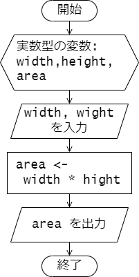
scanf や入力変換指定子の詳細な使い方については以下のリンク先などを参照するとよいでしょう。
演習
演習 4-1
標準入力より 1 つの実数値を受け取ると、 その値を半径とする円の面積を計算し出力するプログラムを作成し、 動作を確認してください。
プログラムの処理の流れは以下のフローチャートのようになります。
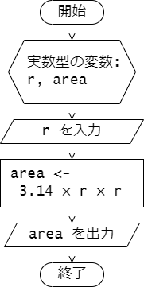
実行例を示します。 1 行目はユーザーからの入力で、2 行目がプログラムからの出力です。
terminal
5.0
78.500000
演習 4-2
標準入力から文字( char 型の値)を 3 つ受け取ったら、 受け取った 3 つの文字を横に逆順に横に並べて出力するプログラムを作成し、 動作を確認してください。
実行例を以下に示します。 1 ~ 3 行目はユーザーからの入力で、4 行目はプログラムの出力です。
terminal
a
b
c
cba
演習 4-3
次は掛け算の九九の表を表示するプログラムです。 プログラムを作成して実行し、その動作を確認しましょう。
#include <stdio.h>
int main(void) {
for (int i = 1; i <= 9; i++) {
for (int j = 1; j <= 9; j++) {
printf("%3d", i * j);
}
printf("\n");
}
return 0;
}
第 5 章 : 演算子
5.1 算術演算子
例題 5-1 : 算術演算
算術演算として加算 + 、減算 - 、乗算 * 、除算 / 、剰余 % などが使えます。
これらを用いたデモプログラムを次に示します。
arithmetic.c
#include <stdio.h>
int main(void) {
int a = 8, b = -2, c = 3;
printf("a + b = %d\n", a + b); // -> 6
printf("(a - b) * c + 12 = %d\n", (a - b) * c + 12); // -> 42
printf("a mod c = %d\n", a % c); // -> 2 (a を c で割った余り)
double pi = 3.14, e = 2.71;
printf("pi + e = %f\n", pi + e); // -> 5.850000
printf("pi / e = %f\n", pi / e); // -> 1.168672
printf("pi / a = %f\n", pi / a); // -> 0.392500
return 0;
}
加減算と乗除算が混じった式では、数学での数式と同様に、
乗算 * と除算 / は加算 + や減算 - よりも優先度が高く先に計算されます。
また、これらの算術演算は左結合性を持ちます(左から順番に計算されます)。
括弧 ( ) を用いて、(a - b) * c + 12 の式のように計算の優先順位を制御することができます。
実行結果を示します。
terminal
a + b = 6
(a - b) * c + 12 = 42
a mod c = 2
pi + e = 5.850000
pi / e = 1.158672
pi / a = 0.392500
例題 5-2 整数同士の割り算
算術演算では、整数型の値同士の演算を行った結果の値は整数型となります。
それ以外の組み合わせでは演算結果の値は実数型となります。
例えば int 型の値と double 型の値の演算結果は double 型の値となります。
特に、整数同士の割り算については注意が必要です。 整数同士の割り算の結果は整数となり、小数点以下の値は切り捨てられます。
次のプログラムを実行して動作を確かめましょう。
division.c
#include <stdio.h>
int main(void) {
int a = 8, b = 3;
int x1 = a / b; // -> 2
double x2 = (double) (a / b); // -> 2.000000
double x3 = (double) a / b; // -> 2.666667
printf("x1 = %d\n", x1);
printf("x2 = %f\n", x2);
printf("x3 = %f\n", x3);
return 0;
}
まず、int x1 = a / b; の部分についてみていきます。
a = 8 と b = 3 は共にint型の整数ですので、その割り算 a / b は数学的には
2.66666... となりますが、小数点以下が切り捨てられて 2 と評価されますなります。
したがって、x1 には 2 が代入されます。
次に、double x2 = (double) (a / b); の部分についてみていきます。
a / b は 2 となりますが、(double) によって値が double 型に
変換され(キャスト)、変数 x2 には 2.0 (double型の値)が代入されます。
最後に、double x3 = (double) a / b; の部分についてみていきます。
a は int 型ですが、(double) によって値が double 型に変換されます。
したがって、ここでの割り算は実数としての割り算が行われます。その結果は double 型となり、x3 には 2.666667 が代入されます。
このように、整数同士の割り算を実数として行いたい場合は、
分子もしくは分母の少なくともどちらかの値を実数型にキャストする必要があります。
プログラムの実行結果は次のようになります。
terminal
x1 = 2
x2 = 2.000000
x3 = 2.666667
5.2 論理演算子
例題 5-3 : ビット単位の論理演算
次のプログラムは、ビット単位の論理演算を行うプログラムです。
bitwiseOp.c
#include <stdio.h>
int main(void) {
unsigned char a = 0x0F; // 00001111
unsigned char b = 0x3A; // 00111010
unsigned char a_and_b = a & b; // -> 00001010 = 0A
unsigned char a_or_b = a | b; // -> 00111111 = 3F
unsigned char a_xor_b = a ^ b; // -> 00110101 = 35
unsigned char not_b = ~b; // -> 11000101 = C5
printf("a & b = %02X\n", a_and_b);
printf("a | b = %02X\n", a_or_b);
printf("a ^ b = %02X\n", a_xor_b);
printf("~b = %02X\n", not_b);
return 0;
}
a と b は unsigned char 型(符号なし 8 bit 整数)の変数で、
それぞれ 0x0F と 0x3A という 16 進数で表される値が代入されています。
0x は 16 進数を表す接頭辞です。
0x0F は 00001111 という 2 進数を表し、
0x3A は 00111010 という 2 進数を表します。
a & b は a と b のビット単位の論理積( AND )を表します。
a = 00001111 と b = 00111010 のビット単位の論理積は 00001010 なります。
したがって、a & b の結果は、 16 進数表示で表すと 0x0A となります。
なお、演算結果を表示している printf("a & b = %02X\n", a_and_b); の
書式文字列にある出力変換指定 %02X は、a_and_b の値を 16 進数で 2 桁表示することを表します。
%02X の 02 は 2 桁表示(先頭0埋め)を表し、X は 16 進数表示を表します。
a | b は a と b のビット単位の論理和( OR )を表します。
また、a ^ b は a と b のビット単位の排他的論理和( XOR )を表します。
~b は b のビット単位の否定( NOT )を表します。
実行結果を示します。
terminal
a & b = 0A
a | b = 3F
a ^ b = 35
~b = C5
5.3 比較演算子
例題 5-4 : 比較演算
数値や変数の値の比較には、比較演算子を用います。
演算結果は真偽値(真 1 または偽 0)となります。
次のプログラムは比較演算子を用いたプログラムです。
comparisionOp.c
#include <stdio.h>
int main(void) {
int three = 3;
printf("three == 3 : %d\n", three == 3); // -> 1 (true)
printf("three != 3 : %d\n", three != 3); // -> 0 (false)
printf("three > 3 : %d\n", three > 3); // -> 0 (false)
printf("three >= 3 : %d\n", three >= 3); // -> 1 (true)
printf("three < 3 : %d\n", three < 3); // -> 0 (false)
printf("three <= 3 : %d\n", three <= 3); // -> 1 (true)
return 0;
}
このプログラムでは int 型の変数 three には 3 が代入されています。
比較演算子 == を使った three == 3 の比較では、
右辺と左辺の値が等しいかどうかが評価されます。
もちろん両者の値は等しいので、この比較の結果は真 ( True ) を表す整数値 1 となります。
(== ではなく = と書くと、代入演算となりますので注意してください。)
一方で、!= は右辺と左辺が等しくないときに真 ( True ) を返す比較演算となります。
three != 3 の比較では、今、右辺と左辺の値が等しくなっているので、
この比較の結果は偽 ( False ) を表す整数値 0 となります。
プログラム中で用いた比較演算子の一覧を示します。
| 比較演算子(C言語) | 意味(数学表記) |
|---|---|
== | \( = \) |
!= | \( \neq \) |
> | \( > \) |
>= | \( \geq \) |
< | \( < \) |
<= | \( \leq \) |
プログラムの実行結果を示します。
terminal
three == 3 : 1
three != 3 : 0
three > 3 : 0
three >= 3 : 1
three < 3 : 0
three <= 3 : 1
例題 5-5 : 論理演算
論理演算子を用いると、複数の比較演算を組み合わせて複雑な条件を表現することができます。
変数や数値に対して論理演算を行うときは、整数値 0 を偽 ( False ) とし、
それ以外の値を真 ( True ) として扱います。
次のプログラムは論理演算子を用いたプログラムです。
logicOp.c
#include <stdio.h>
int main(void) {
int three = 3;
printf(" three == 3 : %d\n", three == 3); // -> 1 (true)
printf(" three > 3 : %d\n", three > 3); // -> 0 (false)
printf(" (three == 3) && (three > 3) : %d\n", (three == 3) && (three > 3)); // -> 0 (false)
printf(" (three == 3) || (three > 3) : %d\n", (three == 3) || (three > 3)); // -> 1 (true)
printf(" !(three == 3) : %d\n", !(three == 3)); // -> 0 (false)
return 0;
}
&& は論理積( AND )、|| は論理和(OR)、! は論理否定(NOT)を表します。
&& は左辺と右辺の両方が真 ( True ) のときに真 ( True ) を返します。
|| は左辺と右辺のどちらかが真 ( True ) のときに真 ( True ) を返します。
! は右辺の真偽を反転します。
ビット単位の論理演算子との違いに注意してください。
このプログラムの実行結果を示します。
terminal
three == 3 : 1
three > 3 : 0
(three == 3) && (three > 3) : 0
(three == 3) || (three > 3) : 1
!(three == 3) : 0
5.4 増減演算子
例題 5-6 : インクリメント・デクリメント
整数型の変数の値を 1 だけ増減させるには、
増分演算子(インクリメント) ++ 減分演算子(デクリメント) -- を用います。
次のプログラムを実行し、
インクリメントやデクリメントが行われるたびに
変数 a の値がどのように変化するか確認してください。
incdec.c
#include <stdio.h>
int main(void) {
int a = 57;
printf("a = %d\n", a); // -> 57
a++; // a = a + 1 と同等 (++a も可)
printf("a = %d\n", a); // -> 58
a--; // a = a - 1 と同等 (--a も可)
a--;
printf("a = %d\n", a); // -> 56
return 0;
}
a++ が実行されると変数 a の値が 1 増えます。
すなわち、代入 a = a + 1 と同じです。
デクリメント a-- も同様です。
プログラムの実行結果を示します。
terminal
a = 57
a = 58
a = 56
例題 5-7 : 前置・後置の違い
増減演算子は、変数の前に置くことも後ろに置くこともできます。 どちらも、変数の値を 1 増減させるという働きは同じですが、 その処理には違いがあります。
次のプログラムは、その違いを確認するプログラムです。
pre_post.c
#include <stdio.h>
int main(void) {
int n, m;
n = 42;
printf("n = %d\n", n);
m = n++; // m = n; n = n + 1; と同等 -> m = 42, n = 43
printf("m = %d, n = %d\n", m, n);
n = 42;
printf("n = %d\n", n); // -> 42
m = ++n; // n = n + 1; m = n; と同等 -> m = 43, n = 43
printf("m = %d, n = %d\n", m, n);
return 0;
}
まず、増減演算子を変数の後に置いた場合をみていきます。
変数 m への代入 m = n++; では、
はじめに変数 m に変数 n の値が代入されます(m = n)。
その後、変数 n の値が 1 増えます(n = n + 1)。
次に、増減演算子を変数の前に置いた場合をみていきます。
変数 m への代入 m = ++n; では、
はじめに変数 n の値が 1 増えます(n = n + 1)。
その後、変数 m に変数 n の値が代入されます(m = n)。
プログラムの実行結果は次の通りです。
n = 42
m = 42, n = 43
n = 42
m = 43, n = 43
5.5 シフト演算子
例題 5-8 : シフト演算
シフト演算子 << と >> は、ビット単位での左シフトと右シフトを行います。
演算子の左辺にはシフトする値、右辺にはシフトするビット数を指定します。
次のプログラムはシフト演算子を用いたプログラムです。
shiftOp.c
#include <stdio.h>
int main(void) {
unsigned char a = 0xAF; // -> 10101111
unsigned char a_shifted_left = a << 2; // -> 10111100 = BC
unsigned char a_shifted_right = a >> 2; // -> 00101011 = 2B
printf("a = %02X\n", a);
printf("a << 2 = %02X\n", a_shifted_left);
printf("a >> 2 = %02X\n", a_shifted_right);
return 0;
}
a << 2 は a の値のビットを左に 2 ビットシフトした値となります。a 自身の値は変化しません。
今 a の値は2進数表記で 10101111 (16 進数表示で 0xAF ) となっているので、
これを左に 2 ビットシフトすると 10111100 (16 進数表示で 0xBC ) となります。
(左にあふれたビットは無視され、右には 0 が埋められます。)
同様にa >> 2 は a の値のビットを右に 2 ビットシフトします。
プログラムの実行結果は次のようになります。
terminal
a = AF
a << 2 = BC
a >> 2 = 2B
5.6 代入演算子
例題 5-9 : 代入演算
代入演算子 = は左辺の変数へ右辺の値を代入するものですが、
代入演算と算術演算を組み合わせて同時に行うこともできます。
次のプログラムは加算演算や乗算演算を代入演算子と組み合わせて行うプログラムです。
assignmentOp.c
#include <stdio.h>
int main(void) {
int num = 57;
printf("num = %d\n", num); // -> 57
num += 3; // num = num + 3 と同じ
printf("num = %d\n", num); // -> 60
num *= 2; // num = num * 2 と同じ
printf("num = %d\n", num); // -> 120
return 0;
}
プログラム中の num += 3; は num = num + 3; と同じ動作です。
同様に、num *= 2; は num = num * 2; と同じ動作となります。
プログラムの処理の流れを示すフローチャートを示します。
変数 num の値がどのように変化するかを実行結果と合わせて確認してください。
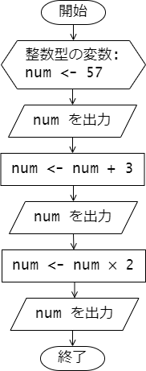
プログラムの実行結果です。
terminal
num = 57
num = 60
num = 120
他の算術論理演算も代入演算と組み合わせて使うことができます。 どのようなものがあるかについては、授業資料や以下のリンク先などを参照してください。
5.7 条件演算子
例題 5-10 : 条件演算
条件演算子 ?: を用いると、条件によって値を選択することができます。
次のプログラムは条件演算子を用いたプログラムです。
relu.c
#include <stdio.h>
int main(void) {
double val_input, val_output;
scanf("%lf", &val_input);
val_output = (val_input > 0) ? val_input : 0;
printf("val_output = %f\n", val_output);
return 0;
}
(val_input > 0L) ? val_input : 0 の部分が
条件演算子 ?: を用いているところです。
? の左側に示された条件 val_input > 0 が真 ( True ) であれば、
: の左側にある値 val_input を返し、偽 ( False ) であれば : の右側の値 0 が返されます。
プログラムの実行例を示します。
まずは、val_input に正の値 3.14 を入力したときの実行結果です。
1 行目はプログラムへの入力です。
terminal
3.14
val_output = 3.140000
val_input に負の値 -1.414 を入力したときの実行結果です。
こちらも 1 行目はプログラムへの入力です。
terminal
-1.414
val_output = 0.000000
演習
演習 5-1
2 人の年齢を入力すると、 その人たちの年齢の平均を出力するプログラムを作成し、 プログラムの動作を確認してください。
入力する年齢は 0 以上の整数値とします。 出力される平均年齢は小数点以下 1 桁まで表示するようにしてください。
期待される実行例は次の通りです。 1 行目と 2 行目はプログラムへの入力で、 2 人の年齢が整数値で入力されています。 3 行目が出力で、 2 人の年齢の平均が小数点以下 1 桁まで表示されています。
terminal
17
8
Average age : 12.5
第 6 章 : 分岐処理
6.1 : if 文
例題 6-1 : if 文
ある条件が成り立つか、 成り立たないかによって行う処理を分岐させるには、 if 文を使います。
次のプログラムは、if 文を使って、
入力された数値が正の数かどうかを判定し、
正の数であれば positive number と表示し、
そうでなければ何も表示しないプログラムです。
positive.c
#include <stdio.h>
int main(void) {
int number;
scanf("%d", &number);
if (number > 0) {
printf("positive number\n");
}
return 0;
}
if の後に続く条件式 number > 0 が真のとき、
{ と } で囲まれたブロック内の文が実行されます。
すなわち、mumber が正の数の時は、
printf("positive number\n"); が実行され、
positive number と表示されます。
条件式が偽、すなわち、mumber がゼロまたは負の数の場合は、
ブロック内の文は実行されず、なにも表示されません。
このプログラムの処理の流れを示すフローチャートを次に示します。
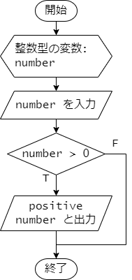
プログラムの実行結果を示します。
1 行目は、入力された数値を表しています。
正の数を入力した場合は、positive number と表示されます。
terminal
42
positive number
負の数を入力した場合は、何も表示されません。
terminal
-1
例題 6-2 : else 文
if 文の後に else を続けることで、
条件式が偽の場合に実行する文を指定できます。
次のプログラムは、入力された数値が正の数かどうかを判定し、
正の数であれば positive number と表示し、
そうでなければ zero or negative number と表示するプログラムです。
positive_negative.c
#include <stdio.h>
int main(void) {
int number;
scanf("%d", &number);
if (number > 0) {
printf("positive number\n");
} else {
printf("zero or negative number\n");
}
return 0;
}
if 文の条件式 number > 0 が成り立つときは、
続くブロック内の文 printf("positive number\n"); が実行されます。
条件式が成り立たないとき、すなわち、number がゼロまたは負の数のときは、
else の後に続くブロック内の文
printf("zero or negative number\n"); が実行されます。
このプログラムの処理の流れを示すフローチャートを次に示します。
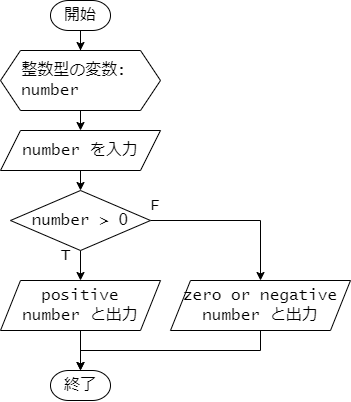
プログラムの実行結果を示します。
1 行目は、入力された数値を表しています。
正の数を入力した場合は次のように、positive number と表示されます。
terminal
42
positive number
負の数を入力した場合は、zero or negative number と表示されます。
terminal
-1
zero or negative number
ゼロを入力した場合も、zero or negative number と表示されます。
terminal
0
zero or negative number
例題 6-3 : else if 文
if 文の後に else if を続けることで、
最初の条件式が偽の場合に、
さらに別の条件式を指定して処理を分岐させることができます。
次のプログラムは、入力された数値が正の数かどうかを判定し、
正の数であれば positive number 、
負の数であれば negative number 、
ゼロであれば zero と表示するプログラムです。
positive_negative_zero.c
#include <stdio.h>
int main(void) {
int number;
scanf("%d", &number);
if (number > 0) {
printf("positive number\n");
} else if (number < 0) {
printf("negative number\n");
} else {
printf("zero\n");
}
return 0;
}
if 文の最初の条件式 number > 0 が成り立つときは、
続くブロック内の文 printf("positive number\n"); が実行されます。
条件式が成り立たないときは、else if に続く条件式 number < 0 が評価されます。
この条件式 number < 0 が成り立つときは、
続くブロック内の文 printf("negative number\n"); が実行されます。
最初の条件式も、2 番目の条件式も成り立たないときは、
最後の else に続くブロック内の文 printf("zero\n"); が実行されます。
このプログラムの処理の流れを示すフローチャートを次に示します。
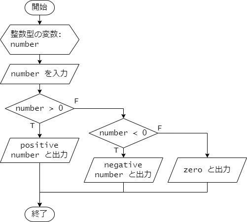
プログラムの実行結果を示します。
1 行目は、入力された数値を表しています。
正の数を入力した場合は次のように、positive number と表示されます。
terminal
42
positive number
負の数を入力した場合は、negative number と表示されます。
terminal
-1
negative number
ゼロを入力した場合は、zero と表示されます。
terminal
0
zero
例題 6-4 : 複雑な条件式
if 文の条件式には、複数の条件を組み合わせることができます。
次のプログラムは、室温として実数値を入力したときに、
入力された数値が 15.0 以上 25.0 未満であれば、
comfortable と表示し、
そうでなければ uncomfortable と表示するプログラムです。
room_temperature.c
#include <stdio.h>
int main(void) {
double temperature;
printf("temperature? ");
scanf("%lf", &temperature);
if (15.0 <= temperature && temperature < 25.0) {
printf("comfortable\n");
} else {
printf("uncomfortable\n");
}
return 0;
}
if 文の条件式 15.0 <= temperature && temperature < 25.0 は、
論理積 && ( AND ) で結合された 2 つの条件式 15.0 <= temperature と
temperature < 25.0 が両方とも成り立つときに真となります。
すなわち、temperature が 15.0 以上 25.0 未満のときに真となります。
条件式を 15.0 <= temperature < 25.0 のようには記述しないことに注意してください。
このように記述すると意図した通りには動作しません。
プログラムの実行結果を示します。 1 行目の数値の部分は、入力された数値を表しています。
21.5 を入力した場合は、条件式が真となるので、
次のように、comfortable と表示されます。
terminal
temperature? 21.5
comfortable
30.0 を入力した場合は、条件式が偽となるので、
次のように、uncomfortable と表示されます。
terminal
temperature? 30.0
uncomfortable
6.2 : switch 文
例題 6-5 : switch 文
条件によって分ける処理の分岐が多い場合、 switch 文を使うとプログラムを簡潔に書くことができます。
次のプログラムは、char 型の値を入力して、
入力された値に応じて曜日を表示するプログラムです。
weekday.c
#include <stdio.h>
int main(void) {
char weekday_initial;
scanf("%c", &weekday_initial);
switch (weekday_initial) {
case 'M':
printf("Monday\n");
break;
case 'T':
printf("Tuesday or Thursday\n");
break;
case 'W':
printf("Wednesday\n");
break;
case 'F':
printf("Friday\n");
break;
case 'S':
printf("Saturday or Sunday\n");
break;
default:
printf("invalid\n");
break;
}
return 0;
}
switch 文ではまず制御式を指定します。
このプログラムでは、char 型の変数 weekday_initial を指定しています。
続く{ と } で囲まれたブロック内には、
switch 文で行う処理を記述しますが、
このブロック内には処理を分岐させるために、分岐先を示す
case および default で構成される複数のラベルを記述します。
このプログラムでは case 'M': から case 'S': までの
5 つの case を使ったラベルと
default: がラベルとなっています。
switch 文では制御式を評価し、
その値に応じて、case で指定した値と一致するかどうかを上から順に調べます。
一致する case が見つかったら、そこへ処理がジャンプします。
なお、制御式で評価される値、および case で指定する値は、
整数値、文字(char 型の値)である必要があります。
このプログラムにおいては、例えば、weekday_initial が 'T' であれば、
case 'T': に処理がジャンプし、
printf("Tuesday or Thursday\n"); が実行されます。
続く break は、switch 文を抜けるための命令です。
(break がないと、次の case の処理が続けて実行されてしまいます。)
制御式で評価した値と一致する case が見つからない場合は、
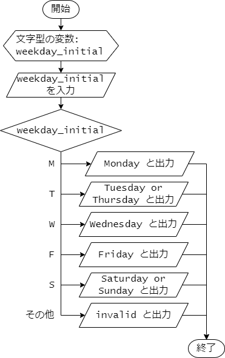
terminal
M
Monday
terminal
T
Tuesday or Thursday
terminal
m
invalid
例題 6-6 : switch 文の fall-through
#include <stdio.h>
int main(void) {
char weekday_initial;
scanf("%c", &weekday_initial);
switch (weekday_initial) {
case 'M':
case 'm':
printf("Monday\n");
break;
case 'T':
case 't':
printf("Tuesday or Thursday\n");
break;
case 'W':
case 'w':
printf("Wednesday\n");
break;
case 'F':
case 'f':
printf("Friday\n");
break;
case 'S':
case 's':
printf("Saturday or Sunday\n");
break;
default:
printf("invalid\n");
break;
}
return 0;
}
terminal
T
Tuesday or Thursday
terminal
t
Tuesday or Thursday
例題 6-7 : if 文と switch 文の混在
if_switch.c
#include <stdio.h>
int main(void) {
int n;
printf("What's your favorite number? ");
scanf("%d", &n);
if (n >= 0) {
switch (n % 3) {
case 0:
printf("Wow! You've entered a multiple of 3! That's a shining and magnificent number, indeed! Well done! \n");
break;
case 1:
printf("Oh. That's a decently good number.\n");
break;
case 2:
printf("Hmm. That's not such a bad number.\n");
break;
}
} else {
printf("Negative number.\n");
}
return 0;
}
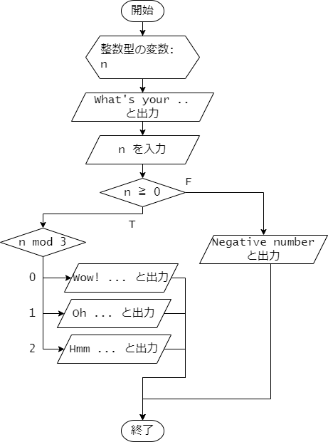
terminal
What's your favorite number? 42
Wow! You've entered a multiple of 3! That's a shining and magnificent number, indeed! Well done!
terminal
What's your favorite number? 43
Oh. That's a decently good number.
terminal
What's your favorite number? -1
That's a negative number.
演習
演習 6-1
架空のS水族館は、入場者の年齢によって入場料が決まります。 年齢と入場料の対応は以下の表のとおりです。
| 券種 | 年齢 | 入場料(円) |
|---|---|---|
| 大人 | 13歳以上65歳未満 | 2400 |
| 子供 | 13歳未満 | 1200 |
| シニア | 65歳以上 | 1800 |
年齢を入力すると、入場料を出力するプログラムを作成してください。 なお、年齢は0以上の整数で入力されるものとします。
期待される実行結果は以下の通りです。
terminal
13
2400 yen
terminal
10
1200 yen
演習 6-2
fizzbuzz.c
#include <stdio.h>
int main(void) {
int max_count;
printf("Enter the maximum count: ");
scanf("%d", &max_count);
for (int count = 1; count <= max_count; count++) {
if ((count % 3 == 0) && (count % 5 == 0)) {
printf("FizzBuzz\n");
} else if (count % 3 == 0) {
printf("Fizz\n");
} else if (count % 5 == 0) {
printf("Buzz\n");
} else {
printf("%d\n", count);
}
}
return 0;
}
第 7 章 : 繰り返し処理
「作成中」
課題
課題 1.
正の実数 \(r\) と 0 以上 360 以下の実数 \(\theta\) を入力すると、 半径が \(r\) で中心角を \(\theta [^{\circ}]\) とする扇形の面積を計算して出力するプログラムを作成してください。 ただし、円周率 \(\pi\) は 3.14 として扇型の面積を計算してください。 また、中心角は度数法で与えていることに注意してください。
期待されるプログラムの動作を示します。 1 行目と 2 行目はユーザーからの入力で、 1行目では \(r\) の値、2 行目では \(\theta\) の値を入力しています。 3 行目はプログラムの出力で、扇型の面積を出力しています。
terminal
12.3
60.0
79.175100
課題 2.
ジュースなどの飲料品を販売している自動販売機を考えます。 この自動販売機に 1000 円札を投入し、170 円のジュースを購入したとすると、お釣りとして 830 円が返ってきます。 この時、お釣りの硬貨の枚数を最小限となるようにお釣りが返されると、 500 円硬貨 1 枚、100 円硬貨 3 枚、10 円硬貨 3 枚 が返されます。
このように、投入金額と購入商品の金額を入力を入力すると、お釣りとして返される硬貨の枚数が最小限となるように計算して出力するプログラムを作成してください。
入力される投入金額と購入商品の金額は、10 円以上 1000 円以下とし、 10 円単位の整数値で入力されるものとします。投入金額は購入商品の金額以上とします。 出力としては、お釣りとして返される 500 円硬貨、100 円硬貨、50円硬貨、10 円硬貨の枚数をそれぞれ出力してください。
期待されるプログラムの動作例を 2 例示します。
まず、投入金額が 1000 円、購入商品の金額が 170 円の場合の例です。 1 行目と 2 行目はユーザーからの入力で、 1 行目では投入金額、2 行目では購入商品の金額を入力しています。 3 行目から 6 行目ではお釣りとして返される 500 円硬貨、 100 円硬貨、50 円硬貨、10 円硬貨の枚数を出力しています。
terminal
1000
170
500: 1
100: 3
50: 0
10: 3
動作例をもう一つ示します。 こちらは、投入金額が 510 円、購入商品の金額が 160 円の場合の例です。
terminal
510
160
500: 0
100: 3
50: 1
10: 0
課題 3.
実係数 \(b, c\) を持つ \(x\)に対する 2 次方程式 \(x^2 + bx + c = 0\) の実数解は、判別式 \(D = b^2 - 4c\) によって以下の表のように与えられます。
| \(D\) | 実数解の個数 | 解 |
|---|---|---|
| \(D > 0\) | 2 | \(\frac{-b \pm \sqrt{D}}{2}\) |
| \(D = 0\) | 1 | \(\frac{-b}{2}\) |
| \(D < 0\) | 0 | 実数解無し |
発展課題 1
以下に示す、ゲーム Nim をプレイするプログラムを作成してください。
Nim のルール
Nim は 2 人のプレイヤーが交互に石を取り合うゲームです。 ゲームの開始時には、石の山が 3 つあり、それぞれの山には 3, 4, 5 個の石が置かれています。 (山の数と石の数は任意の値に変更しても構いません。) プレイヤーは 1 回に一つの選び、そこから 1 つ以上の石を取る必要があります。 プレイヤーは交互に石を取り合い、最後の石を取ったプレイヤーが勝ちとなります。
ゲームの進行例
2 人のプレイヤーをそれぞれ、プレイヤー A と プレイヤー B として、 ゲームの進行例を示します。
プレイヤー A が先番です。 初期配置では、各山の石の数は以下のようになっています。 (山には番号が付けられています。) また、プレイヤー A に石を取り除く山の番号と取り除く石の数を入力するように促します。
1 :***
2 :****
3 :*****
player A : Enter the pile number and the number of stones to remove.
プレイヤー A は、山の番号と取り除く石の数を入力します。
ここでは、2 番の山から 3 個の石を取り除くとしして、2 3 と入力します。
そうすると、山の石の数は以下のように変化します。
(1 行目は、プレイヤー A の入力)
2 3
1 :***
2 :*
3 :*****
player B : Enter the pile number and the number of stones to remove.
次は、プレイヤー B の番です。
3 番目の山の石を 5 個すべて取り除くとして、3 5 と入力したとします。
山の石の数は次のようになります。
3 5
1 :***
2 :*
3 :
player A : Enter the pile number and the number of stones to remove.
次にプレイヤー A は、1 番目の山から 2 個の石を取り除くとして、
1 2 と入力すると、山の石の数は次のようになります。
1 2
1 :*
2 :*
3 :
player B : Enter the pile number and the number of stones to remove.
今度はプレイヤー B が 2 番目の山から 1 個の石を取り除くとして、
2 1 と入力すると、山の石の数は以下のようになります。
2 1
1 :*
2 :
3 :
player A : Enter the pile number and the number of stones to remove.
最後にプレイヤー A が 1 番目の山から 1 個の石を取り除くとして、
1 1 と入力すると、すべての石が取り除かれますので、
プレイヤー A が勝ちとなります。
1 1
1 :
2 :
3 :
player A, you won!
このようにプレイヤー A が勝ったことを示すメッセージを出力して、 ゲームは終了となります。
注意点
プレイヤーの入力は、山の番号と取り除く石の数を空白(もしくは改行)で区切って入力するものとします。 プレイヤーからの入力の値が不適切な場合、 例えば、山の番号が存在しない場合や、山の石の数より多くの石を取り除こうとした場合などでは、 プレイヤーへ再度入力を促すようにしてください。